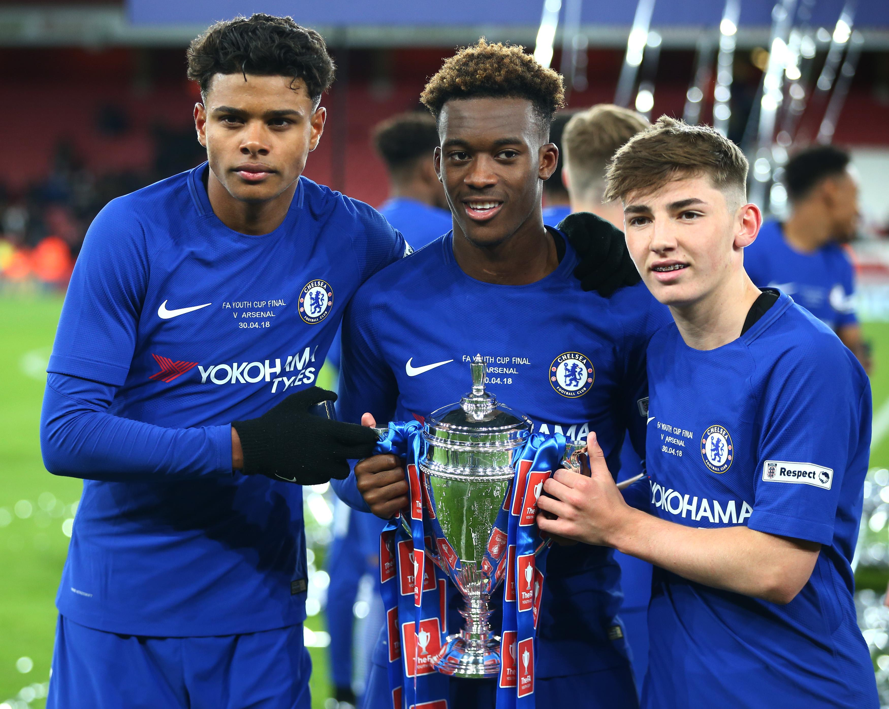
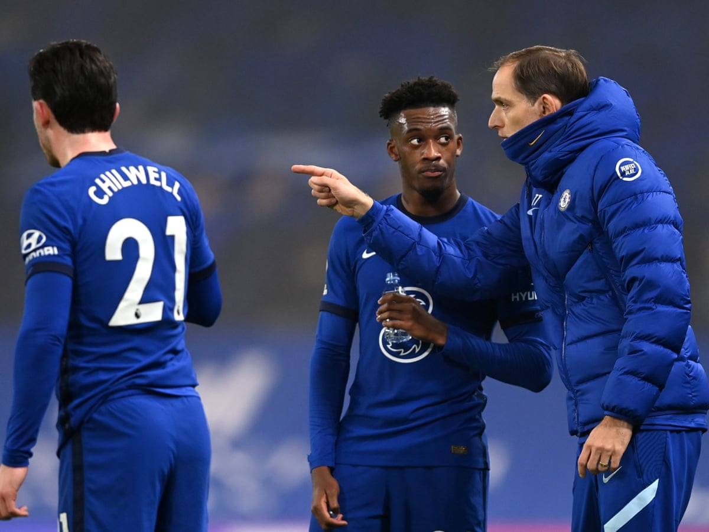

CALLUM HUDSON-ODOI
CALLUM HUDSON-ODOIเป็นผู้ทำประตู รวมถึงสร้างโอกาสให้ทีมได้หลายครั้งตลอดช่วงวัยเรียน เขาเป็นผู้เล่นที่เปี่ยมไปด้วยพรสวรรค์ และมีทักษะที่สามารถเล่นแนวรุกได้หลายตำแหน่ง
เขาเป็นนักเตะตัวหลักของทีมในฤดูกาล 2016/17 มีบทบาทสำคัญในการคว้าสามแชมป์ได้ในปีนั้น รวมถึงยิงประตูในรอบที่ 5, รอบรองชนะเลิศ และรอบชิงชนะเลิศเกมเอฟเอ ยูธ คัพ
ฤดูกาลต่อมา เขาได้รับโอกาสการลงเล่นทั้งกับทีมชุดใหญ่ และทีมชุดพัฒนาการที่ผ่านเข้าสู่รอบรองชนะเลิศรายการเช็กกะเทรด โทรฟี่ และช่วยให้ทีม U-18 คว้าแชมป์เอฟเอ ยูธ คัพได้อีกสมัย เขายิงไป 2 ประตูในรอบชิงชนะเลิศ
ปีกรายนี้มีอิทธิพลมากขึ้นในช่วงเริ่มต้นการแข่งขันแชมเปี้ยนส์ ลีกของเรา โดยได้ลงเล่นใน 5 เกมแรกของรอบแบ่งกลุ่ม และเบิกร่องลูกแรกในเกมบุกชนะคราสโนดาร์กับแรนส์ ซึ่งถือเป็น 2 ประตูแรกของเขาในการแข่งขันเวทีสูงสุดของยุโรป ก่อนที่อาการบาดเจ็บจะทำให้เขาหมดสิทธิ์ลงเล่นในช่วงเดือนธันวาคม ที่พวกเราเจอกับความยากลำบาก
เมื่อเขาฟื้นตัวจากอาการบาดเจ็บในช่วงคริสต์มาส ทีมเชลซีต้องดิ้นรนเพื่อผลการแข่งขัน อย่างไรก็ตาม ผลงานอันน่าตื่นเต้นของเขาจากม้านั่งสำรอง เป็นหนึ่งในสิ่งที่น่าชื่นใจไม่กี่อย่างในช่วงต้นปี โดยเขาได้อัดฉีดพลังงานที่จำเป็นให้กับขุมกำลัง
เซอร์ไพรส์ครั้งใหญ่ในการจัดทีมชุดใหญ่ครั้งแรกของโธมัส ทูเคิ่ล คือการปรากฏตัวของฮัดสัน-โอดอยในตำแหน่งวิงแบ็คที่ไม่คุ้นเคย แต่สิ่งดังกล่าวถูกพิสูจน์แล้วว่าเป็นการตัดสินใจที่ยอดเยี่ยม เมื่อเขาทำผลงานได้อย่างโดดเด่นจากผลเสมอที่บ้านของวูล์ฟแฮมป์ตัน วันเดอเรอร์ส
ความสารพัดประโยชน์กับการเล่นตำแหน่งใหม่ของคัลลัมกลายเป็นสิ่งสำคัญ เนื่องจากแข้งวัย 20 ปี สามารถสลับบทบาทระหว่างวิงแบ็คกับปีกแบบเดิม ๆ ได้อย่างลงตัว ความชื่นชมของทูเคิ่ลสำหรับอ็อปชั่นดังกล่าวนั้น ถูกแสดงให้เห็นโดยข้อเท็จจริงที่ฮัดสัน-โอดอยลงเล่น 13 จาก 19 นัดในพรีเมียร์ ลีกภายใต้การคุมทีมของเขา และทุกเกมในเอฟเอ คัพ ยกเว้นรอบรองชนะเลิศ
เขาสร้างประวัติศาสตร์ด้วยการเป็นผู้เล่นอายุน้อยที่สุดของเชลซีที่ติดทีมชาติอังกฤษชุดใหญ่ด้วยวัยเพียง 18 ปี และได้ประเดิมสนามในเดือนมีนาคม 2019 สิ่งดังกล่าวทำให้เขาเป็นคนที่อายุน้อยที่สุดที่ลงเล่นให้ทีมชาติอังกฤษในการแข่งขันทางการด้วย
เขาถูกส่งลงสนามจากม้านั่งสำรองในช่วง 20 นาทีสุดท้ายที่ ทรี ไลอ้อนส์ ทำศึกยูโร 2020 รอบคัดเลือกเอาชนะสาธารณรัฐเช็กที่สนามเวมบลีย์ โดยมีส่วนกับประตูที่ 5 ในค่ำคืนดังกล่าว หลังจากนั้นไม่กี่วัน ฮัดสัน-โอดอยลงเป็นตัวจริงให้ทีมชาติอังกฤษในการแข่งขันกับมอนเตเนโกร และทำแอสซิสต์ให้กับ รอสส์ บาร์คลี่ย์ เพื่อนร่วมสโมสรเชลซี
SOCIAL MEDIA
 |
|